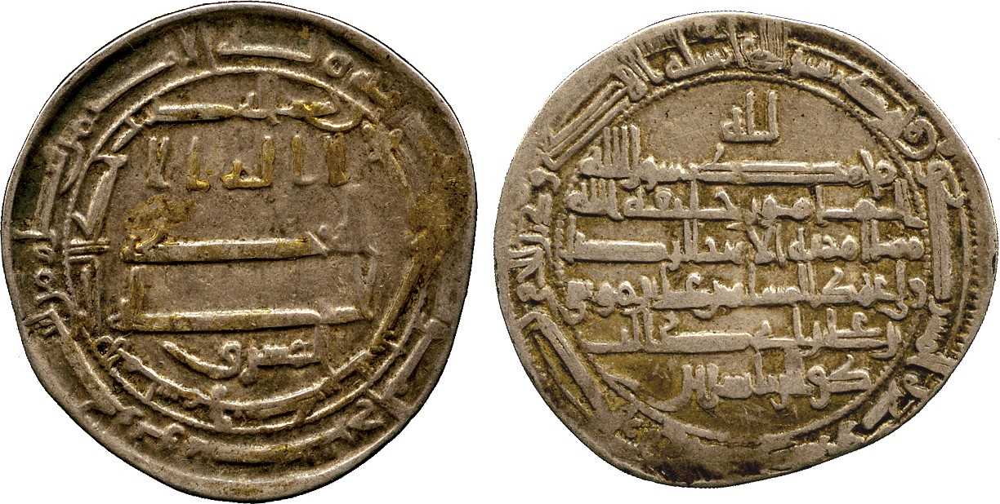
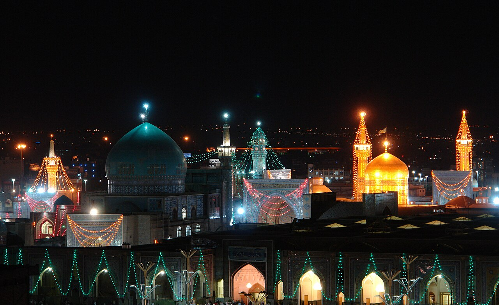

Ridawi coins. Silver dirhams struck around 201-202 AH (816-817 CE), after al-Ma'mun named Imam al-Rida ﵇ heir apparent. Mints such as Isfahan and Samarqand issued them citing the Imam's ﵇ name beside the caliph's. Few survive, and believers carried them as keepsakes (tabarruk).
The civil war was over. Al-Ma'mun, the seventh Abbasid caliph, had defeated his brother al-Amin and taken a throne that ruled from the Atlantic to the Indus. The peace he imposed was fragile, and the loyalties of his subjects were fractured. The descendants of Ali ﵇ commanded a devotion no Abbasid banner could match, and revolts raised in the Prophet's ﷺ name had flared across province after province.
Against this backdrop al-Ma'mun conceived a plan of extraordinary audacity. He summoned Imam Ali ibn Musa al-Rida ﵇ from Medina to his capital at Marw and named him heir apparent. The design was political to its core: win the affection of every heart devoted to the People of the House, smother the revolts that marched under Alid colors, and bind the eastern provinces more tightly to his rule. The Imam ﵇ resisted as long as he could. When resistance proved futile, he accepted on a single condition: he would have no authority to appoint, dismiss, or interfere in any matter of state.
Al-Ma'mun's ambitions for him reached further still. He ordered his vizier, al-Fadl ibn Sahl, to gather at court the foremost representatives▼ commentary of every religion and sect in the empire: the Catholicos of the Christians, the Exilarch of the Jews, the leaders of the Sabians, the high priests of the Zoroastrians, and the scholars of every creed. What the caliph intended was a public trial of the Imam's ﵇ learning. The heir of the Prophet's ﷺ house was to sit before the assembled champions of the world's faiths and answer them on equal terms.
On the appointed day the audience hall was packed to overflowing. Talibids and Hashimids had come in great numbers, with the commanders of the army, the scholars of Islam, and the heads of every other community. As the Imam ﵇ entered, al-Ma'mun rose from his seat, and the whole assembly rose with him. The people remained standing, unwilling to sit out of reverence, until the caliph gestured for them to be seated. Then al-Ma'mun turned to the Catholicos and presented his cousin:
"Catholicos, this is my cousin Ali ibn Musa ibn Ja'far. He is descended from Fatima ﵍, the daughter of our Prophet Muhammad ﷺ, and from Ali ibn Abi Talib ﵇. I should like you to speak with him, to debate him, and to treat him fairly."
The Catholicos said:
"Commander of the Faithful, how can I argue with Ali from a book I reject, about a prophet I do not believe in?"
Al-Rida ﵇ said to him:
"Christian, if I argue against you from your own Gospel, will you acknowledge it?"▼ commentary
The Catholicos said:
"How could I deny what the Gospel itself says? Yes, by God, I accept it, even against my will."
Al-Rida ﵇ said to him:
"Ask whatever you wish, and listen well to the answer."
The Catholicos said:
"What do you say concerning the prophethood of Jesus and his scriptures? Do you deny any of it?"
The Imam answered:
"I affirm the prophethood of Jesus, his book, and the good news he gave his people, which the disciples themselves confirmed. And I disbelieve▼ commentary in the prophethood of any Jesus who does not affirm the prophethood of Muhammad ﷺ and his book, and who gave his people no good news of him."
The Catholicos said:
"Are rulings not settled only by the testimony of two just witnesses?"
"They are," the Imam ﵇ replied. The Catholicos continued:
"Then bring two witnesses to the prophethood of Muhammad ﷺ from outside your own religion, witnesses Christianity does not reject. And you may hold us to the same rule: witnesses from outside ours."
Al-Rida ﵇ said:
"Now that is fairness, Christian. Will you accept from me a just witness, the one man the Messiah, Jesus son of Mary, trusted above all others?"▼ commentary
The Catholicos said:
"Who is this just man? Name him."
Al-Rida ﵇ said:
"What do you say about John the Apostle?"
The Catholicos said:
"Excellent, excellent! You have named the man dearest to the Messiah."
Al-Rida קּ said:
"I put you under oath: does the Gospel not record that John said: the Messiah told me of the religion of Muhammad the Arab, and gave me the good news of him, that he would come after me; and I passed the news to the apostles, and they believed?"
- John's report as the Gospel carries it, quoted by Imam al-Rida ﵇; the exchange preserved in Mahdi Muntazar al-Qa'im, Isa al-Masih fi al-Ahadith al-Mushtaraka, p75-76, and al-Astarabadi, al-Barahin al-Qati'a, vol.03, p89
The Catholicos said:
"John did pass that on from the Messiah, and announced the prophethood of a man, of his household, and of the one he left in charge; but he never said when this would happen, and he never named these people for us, so we could know who they were."
Al-Rida ﵇ said:
"If we bring you one who reads the Gospel and recites to you the mention of Muhammad ﷺ and his household and his community, will you believe?"
The Catholicos said:
"That is sound."
Al-Rida ﵇ said to Nastas the Roman:
"How well do you know the third book of the Gospel?"
Nastas said:
"I know it by heart!"
Then he turned to Ra's al-Jalut and said:
"Do you not read the Gospel?"
Ra's al-Jalut said:
"Yes, by my life."
The Imam קּ said:
"Then take up the third book. If there is in it the mention of Muhammad and his household and his community, testify for me; and if there is no mention of him in it, do not testify for me."▼ commentary
Then the Imam ﵇ read the third book, and when he reached the mention of the Prophet ﷺ, he stopped. Then the Imam said:
"Christian, I ask you in the name of the Messiah and his mother: do you acknowledge that I know the Gospel?"
The Catholicos said:
"I do."
Then he recited to us the mention of Muhammad ﷺ and his household and his community, and this is what he read:
"Truly I say to you: no one ascends to heaven except he who descended from it, except the Rider of the Camel, the Seal of the Prophets, for he ascends to heaven and descends."▼ commentary
- The Gospel, third book: the passage read aloud by Imam al-Rida ﵇ at the majlis; preserved in al-Majlisi, Bihar al-Anwar, vol.14, p335▼ commentary
Then the Imam קּ said:
"So what do you say, Christian? This is the saying of Jesus son of Mary. Call it a lie, and you have called Moses ﵇ and Jesus ﵇ liars. And the moment you deny this testimony, your own law sentences you to death, because you would have disbelieved in your Lord, your prophet, and your book."
The Catholicos said:
"I cannot deny what the Gospel has now made clear to me. I accept it."
Al-Rida ﵇ said:
"Bear witness to what he has accepted."
Then the Imam קּ said:
"Catholicos, ask whatever you wish."
The Catholicos hurried to ask about the disciples of Jesus ﵇ and the scholars of the Gospel. Al-Rida ﵇ said:
"You have asked the one man who knows. The disciples were twelve men, and the best and most learned of them was Luqa. The scholars of the Christians were three: John the Elder of Ajj, John of Qarqisiya, and John the Apostle, the Daylami of Zanjan. It was the last of them who kept the record of the Prophet ﷺ, and it was he who brought the good news to the nation of Jesus ﵇ and to the Children of Israel."
The debate then moved from the text to doctrine. If Jesus ﵇ was God, for whom did he fast in the wilderness for forty days, and to whom did he pray in the garden and on the mountain and in the hours before his arrest? A God who hungers and supplicates stands in need of something beyond himself, and need is the mark of the creature. The acts that filled every page of the Gospel, the weeping, the exhaustion, the cry of abandonment from the cross, were the acts of one who worshiped God, and whatever worships cannot itself be the object of worship.
The Trinity, defended in its most rigorous form, fell into a dilemma with no exit▼ commentary: if the three persons were real and the substance stood over them, the count of eternal realities reached four; if the persons were absorbed into an undivided simplicity, the distinctions dissolved, and the suffering of the Son became the suffering of the Father.▼ commentary The title Word of God, read at its plain sense, recorded the manner of a creation by command▼ commentary, the divine "Be" that brings a servant into being, with no transfer of essence from the Speaker to the spoken. The miracles bore the signature of prophethood: the clay bird flew by God's leave, and power borrowed for the moment presupposes its owner. And the sonship founded on singular gifting had been dissolved by Jesus ﵇ himself, in words the Gospel preserves at the empty tomb:▼ commentary
αναβαινω προς τον πατερα μου και πατερα υμων και θεον μου και θεον υμων
إِنِّي أَصْعَدُ إِلَى أَبِي وَأَبِيكُمْ وَإِلهِي وَإِلهِكُمْ
"I am ascending to my Father and your Father, to my God and your God."
- The Gospel of John, 20:17; Greek: Elzevir Textus Receptus (1624); Arabic: Smith and Van Dyck (1865)
He had extended the title of Father to men who held none of his distinction. Adam had come into being without father or mother, a stronger claim on the same ground. The Christians fell silent:
"We have never seen anyone argue like this, not in all our days. We will have to look hard at what we believe."
The Imam ﵇ turned next to the Exilarch, Ras al-Jalut, whose title meant Head of the Captivity and whose lineage reached back through the academies of Babylon to the exile of Jerusalem. He opened with a question:
"Ra's al-Jalut, what keeps you from acknowledging Jesus son of Mary ﵇? He raised the dead, cured the blind and the leper, and shaped a bird out of clay, then breathed into it, and it became a living bird by God's permission."
The Exilarch said:
"People say he did these things, but we never witnessed them ourselves."▼ commentary
Had the Exilarch himself stood at the shore and watched the waters part? Had he seen the manna fall or the rock gush with twelve springs? He knew the signs of Moses ﵇ the way every Jew after the exile knew them, through unbroken testimony across the centuries, and the same class of testimony carried the acts of Jesus ﵇:
"Then how is it you accept Moses as truthful, but refuse to accept Jesus?"
The Exilarch held his ground, so the Imam ﵇ turned to the Torah, the book the man had expounded all his life, pressing him with verses he had recited in the synagogue since he was old enough to read:
וְרָ֣אָה רֶ֗כֶב צֶ֚מֶד פָּֽרָשִׁ֔ים רֶ֥כֶב חֲמֹ֖ור רֶ֣כֶב גָּמָ֑ל
فَرَأَى رُكَّابًا أَزْوَاجَ فُرْسَانٍ. رُكَّابَ حَمِيرٍ. رُكَّابَ جِمَال
"And he saw a chariot, a pair of horsemen, a rider on a donkey, a rider on a camel."▼ commentary
- Isaiah 21:7; Hebrew: Westminster Leningrad Codex; Arabic: Smith and Van Dyck (1865)
A prophet like Moses ﵇ raised from among the brethren of Israel, the Holy One shining forth from Paran, the heavens filled with the glorification of Ahmad: these were no foreign interpolations; they stood in the Hebrew text his own community carried. Pressed with the verse of Habakkuk, the Exilarch conceded before the assembly:
"Habakkuk did say that, and we do not deny his words."
The Exilarch answered from the rabbinic academies:
"The brethren are the tribes of Israel themselves. The same word appears in the law that permits Israel to choose a king from among their brethren, and no rabbi ever read that as license to seek a king among the Ishmaelites."
The Imam's ﵇ reply turned on one word of the verse itself: like you.▼ commentary Every prophet after Moses ﵇ who came from Israel was already of Israel, and the likeness would distinguish no one; the verse pointed to a lawgiver who stood to his people as Moses ﵇ stood to his, and Israel had produced none. Joshua brought no new law; David and Solomon ruled within the Torah; Isaiah and Jeremiah carried no fresh revelation. The one truly like Moses ﵇ came with a book and a law from outside Israel, from the line of the brother sent away into Paran, the very wilderness from which Habakkuk said the Holy One would shine forth. The Exilarch had no answer.
The Great Herbadh, high priest of the fire temples of Persia, was called forward next, and the Imam ﵇ began with a question that cut to the foundation of his faith:
"Do you worship the fire itself, or the one who made the fire?"
Fire can be extinguished: a gust of wind snuffs out a candle▼ commentary, a handful of sand smothers a brazier, rain quenches a fire that has burned for days. It needs wood to burn and air to breathe, and strip either away and it dies. Whatever can be destroyed is created, whatever is created depends on a cause outside itself, and a god that perishes when its fuel runs out is a servant of circumstance wearing the name of a master. The priest shifted ground to the light and the hidden power behind it, and the Imam ﵇ answered that the real object of such reverence was the Creator of both the fire and the light; to venerate the sign while ignoring the one who set it in place was to mistake the messenger for the one who sent him.
Beneath the fire stood the doctrine of the two principles. Light and darkness as co-eternal powers gave the universe two first causes, and two first causes is a contradiction in terms: each would limit the other, each could be overcome, and the very language of cosmic warfare was an admission that neither was eternal in the sense the doctrine required. The Imam ﵇ pointed last to the sun, the greatest fire the priest could name: it rises at an appointed hour and sets at an appointed hour, following an arc inscribed by a power greater than itself, and a thing that rises and sets at another's command is a servant. The priest raised a final objection:
"Darkness cannot have been created, since it is only the absence of light, not a thing in itself."
If darkness is a privation, the cosmos holds one power and one absence, and a religion that worships two principles has been worshiping one. The Great Herbadh sat down in silence.
The elder who rose last was Imran al-Sabi, a philosopher of the ancient star cults, counted among his people a scholar of unusual depth, and he brought the deepest question any of them had raised. He asked nothing about prophecy or scripture. He asked about the unity of God itself:
"Is God one the way a single thing is one, a unit that could conceivably be joined by a second? Or is God's oneness something other than the number one, beyond counting, beyond doubling?"
The Imam's ﵇ answer unfolded slowly.▼ commentary The number one is a count, and every count implies the possibility of two; a God who was one in that sense would leave the door to polytheism standing open. The oneness of God is the oneness of the ground beneath all counting, the unity that makes number itself possible. Nothing can be added to it, because nothing stands outside it to add. God is no body, for a body occupies space and is composed of parts, and whatever has parts depends on them. God is no form, for whatever bears a shape is bounded by it. God is no accident inhering in a substance, for a quality depends on what it qualifies. He did not come into being in time, for time is a created measure of change, and whatever changes was incomplete in its former state. He was alone before creation, sufficient in Himself, and from His sufficiency He brought forth the heavens and the earth without depletion, without effort, without counsel. Imran pressed the last objection such a doctrine invites:
"If God is utterly one, beyond composition and relation, how can He act? Acting requires will, and will requires something to act upon."
The Imam answered that the change lies wholly on the side of the effect: God did not begin to will; His will is eternal as His knowledge is eternal, and creation is the effect of that eternal will, with no new event entering the divine life. The argument ran for hours, carried step by step from the nature of number to the nature of body to the nature of time and change. When it ended, Imran declared:
"I have searched for this my whole life. I have traveled from city to city and debated the theologians and philosophers of every school, and no one has ever explained the nature of God's oneness with such clarity and force."
Then he testified that there is no god but God and that Muhammad ﷺ is His messenger, and embraced Islam in the presence of the caliph and the assembled scholars of every creed. The hall erupted, some in astonishment and some in consternation, for a man of Imran's stature did not convert lightly.

Where Marw lies. The hall where the debates ran and the shrine where the Imam ﵇ lies buried are two places. The historical site of Marw, near modern Mary in Turkmenistan, sits about 485 kilometres (300 miles) from Mashhad, Iran, where the Imam Reza Shrine grew around his tomb after his death in 203 AH (818 CE). Driving between them takes six and a half to seven hours, crossing the border between northeastern Iran and southern Turkmenistan. Photo: Wikimedia Commons (Mohebin14), CC BY-SA 3.0.
The last voice fell silent, and the great hall of Marw held its breath. The Catholicos had heard his own Gospel turned against him and had confessed its testimony to the Prophet ﷺ. The Exilarch had conceded the words of Habakkuk and could not answer the word "like you" in his own scripture. The high priest of the fire temples had watched his flame reduced to a created, perishable thing and his two principles collapse into one. The elder of the Sabians had fallen silent before the unity he had sought all his life, and then he had spoken the shahada. The account comes down through the narration of al-Hasan ibn Muhammad al-Nufali, who sat through every exchange and recorded what he witnessed; al-Saduq (d.381 AH) records it in Uyun Akhbar al-Rida, vol.1, chapter 12, and al-Majlisi (d.1110 AH) transmits it in Bihar al-Anwar, vol.14: a descendant of the Prophet ﷺ moving through the Torah, the Gospel, and the reasoning of natural theology with the same authority, answering each disputant in the idiom of his own scripture before the man had finished forming his objection. They had arrived expecting to examine the Imam ﵇. What they received was an examination of everything they had brought with them.
Al-Ma'mun sat through it all, and whatever his designs▼ commentary, he could not fail to recognize what the gathering had shown. The elevation of the Imam ﵇ to the heir apparency had served several ends at once, and the debate was its ornament: the public spectacle of interfaith disputation above, the political enclosure beneath. What the hall actually displayed was the inheritance of the House of Muhammad ﷺ: the accumulated knowledge of every prophetic tradition, spoken from its source, belonging to no school and drawing on no single book. For the school that preserved the narration, the hall at Marw was a verse made visible:
فَسْـَٔلُوٓا۟ أَهْلَ ٱلذِّكْرِ إِن كُنتُمْ لَا تَعْلَمُونَ
Fa-s'alū ahl al-dhikri in kuntum lā taʿlamūn.
"Ask the people of the reminder if you do not know."
- The Qur'an, Surat al-Nahl, 16:43 (Uthmani text)
The people of the reminder are the household of the Prophet▼ commentary ﷺ, and the questions had come from every quarter, and the answers had come from the one station authorized to give them. And the final principle the assembly displayed was the unity of the missions themselves▼ commentary: the messengers are one line, their books one deposit, and whoever truly believes in the Jesus ﵇ who foretold a prophet to come cannot, in consistency, refuse the prophet he foretold.
The narration survives in sources compiled roughly two centuries after the event▼ commentary, and honest use of the record requires saying so plainly. It may preserve a verbatim account, or a literary construction shaped by the Imami tradition's own concerns. What it unquestionably preserves is the school's self-understanding: that the Imam of the House carried knowledge sufficient to meet every challenge, inherited from the Prophet ﷺ through the chain of the Ahl al-Bayt ﵈, and a method that can be tested by any reader against the scriptures it cites. The commentary that follows attaches the Arabic grounding to each movement of the story: the summoning order, the exchanges as the sources record them, and the verses and scholastic formulations behind the arguments the narrative has told.
Commentary
The Arabic grounding and sources (20 cards)
The Summoning Order
The frame narration belongs to al-Hasan ibn Muhammad al-Nufali, who witnessed the debates and transmitted them to the compilers. His account fixes the roster: the Catholicos, the Exilarch, the chiefs of the Sabians, the Great Herbadh, the followers of Zoroaster, Qustas the Roman, and the theologians. Al-Ma'mun's stated wish was simply to hear the arguments of both sides.
قال الحسن بن محمد النوفليّ : لمّا قدم علي بن موسى الرضا ( عليه السّلام ) إلى المأمون أمر الفضل بن سهل أن يجمع له أصحاب المقالات مثل الجاثليق ورأس الجالوت ورؤساء الصابئين والهربذ الأكبر ، وأصحاب زردهشت وقسطاس الرّومي والمتكلّمين ليسمع كلامه وكلامهم
"Al-Hasan ibn Muhammad al-Nufali said: When Ali ibn Musa al-Rida ﵇ was brought before al-Ma'mun, the latter ordered al-Fadl ibn Sahl to assemble for him the holders of the doctrines: the Catholicos, the Exilarch, the chiefs of the Sabians, the Great Herbadh, the followers of Zoroaster, Qustas the Roman, and the theologians, so that al-Ma'mun might hear his arguments and theirs."
- al-Majma' al-'Alami li-Ahl al-Bayt - Lajnat al-Ta'lif, A'lam al-Hidaya, vol.10, p186
The order to assemble the leaders came through al-Fadl ibn Sahl, the vizier behind the heir apparency itself. Biographers of the Imam ﵇ record the sequel: the hall packed with Talibids and Hashimids, the commanders and the scholars, and the whole company standing in respect until the Imam ﵇ had taken his seat beside the caliph (Baqir Sharif al-Qurashi (d.1433 AH), Hayat al-Imam al-Rida, vol.01, p138).
"If I Argued from Your Own Gospel"
The opening exchange, as the sources record it, established the rule of engagement for every scriptural debate that followed. The Catholicos assumed the Imam ﵇ would ground his case in the Qur'an or the words of the Messenger, sources the Christian did not accept, and asked for proofs drawn from the Christians' own books instead. The Imam ﵇ accepted at once and bound the Catholicos to it with an oath.
فقال الرضا عليه السّلام : « يا نصرانيّ فإن احتججت عليك بإنجيلك أتقرّ به ؟ » . قال الجاثليق : وهل أقدر على دفع ما نطق به الإنجيل ؟ نعم ، والله أقرّ به على رغم أنفي . فقال له الرضا عليه السّلام : « سل عمّا بدا لك واسمع الجواب »
"Al-Rida ﵇ said: 'Christian, if I argue against you from your own Gospel, will you acknowledge it?' The Catholicos said: 'How could I deny what the Gospel itself says? Yes, by God, I accept it, even against my will.' Al-Rida ﵇ said to him: 'Ask whatever you wish, and listen well to the answer.'"
- Muhammad Ja'far al-Astarabadi (Shari'atmadar) (d.1263 AH), al-Barahin al-Qati'a fi Sharh Tajrid al-'Aqa'id al-Sati'a, vol.03, p88
The Imam ﵇ would repeat it with the Torah against the Exilarch, and no opponent was ever asked to grant what he had come to deny.
Two Jesuses and the Promise That Remained
Al-Rida's ﵇ words rest on a distinction the Gospel itself makes. He affirms the Jesus ﵇ who preached, and rejects any rewriting of him that removes the prophet he announced; and the promise of that prophet stands in the surviving text of the farewell discourses, quoted here in the Greek, the Arabic of the Van Dyck Bible, and English:
قال الجاثليق : ما تقول في نبوّة عيسى وكتبه هل تنكر منهما شيئا ؟ قال الرضا عليه السّلام : « أنا مقرّ نبوّة عيسى وكتابه وما بشّر به أمّته وأقرّت به الحواريّون ، وكافر بنبوّة كلّ عيسى لم يقرّ بنبوّة محمّد صلّى اللّه عليه وآله وكتابه ولم يبشّر به أمّته »
"The Catholicos asked: 'What do you say about the prophethood of Jesus and his scriptures? Do you deny any of it?' Al-Rida ﵇ replied: 'I affirm the prophethood of Jesus, his book, and the good news he gave his people, which the disciples confirmed. And I disbelieve in any Jesus who does not affirm the prophethood of Muhammad ﷺ and his book, and who gave his people no good news of him.'"
- Muhammad Ja'far al-Astarabadi (Shari'atmadar) (d.1263 AH), al-Barahin al-Qati'a fi Sharh Tajrid al-'Aqa'id al-Sati'a, vol.03, p88
Behind the distinction stood the promise the surviving text still carried, the farewell discourses of the Fourth Gospel, quoted here in the Greek text, the Arabic of the Van Dyck Bible, and English:
Kai egō erōtēsō ton patera, kai allon paraklēton dōsei hymin, hina menē meth' hymōn eis ton aiōna.
وَأَنَا أَطْلُبُ مِنَ الآبِ فَيُعْطِيكُمْ مُعَزِّيًا آخَرَ لِيَمْكُثَ مَعَكُمْ إِلَى الأَبَدِ،
"And I will ask the Father, and he will give you another Comforter, that he may remain with you forever."
- The Gospel of John, 14:16; Greek: Elzevir Textus Receptus (1624); Arabic: Smith and Van Dyck (1865)
Ho de paraklētos, to pneuma to hagion, ho pempsei ho patēr en tō onomati mou, ekeinos hymas didaxei panta kai hypomnēsei hymas panta ha eipon hymin.
وَأَمَّا الْمُعَزِّي، الرُّوحُ الْقُدُسُ، الَّذِي سَيُرْسِلُهُ الآبُ بِاسْمِي، فَهُوَ يُعَلِّمُكُمْ كُلَّ شَيْءٍ، وَيُذَكِّرُكُمْ بِكُلِّ مَا قُلْتُهُ لَكُمْ.
"But the Comforter, the Holy Spirit, whom the Father will send in my name, he will teach you all things and remind you of everything I said to you."
- The Gospel of John, 14:26; Greek: Elzevir Textus Receptus (1624); Arabic: Smith and Van Dyck (1865)
Hotan de elthē ho paraklētos hon egō pempō hymin para tou patros, to pneuma tēs alētheias ho para tou patros ekporeuetai, ekeinos marturēsei peri emou.
«وَمَتَى جَاءَ الْمُعَزِّي الَّذِي سَأُرْسِلُهُ أَنَا إِلَيْكُمْ مِنَ الآبِ، رُوحُ الْحَقِّ، الَّذِي مِنْ عِنْدِ الآبِ يَنْبَثِقُ، فَهُوَ يَشْهَدُ لِي.
"And when the Comforter comes, whom I will send to you from the Father, the Spirit of truth who goes out from the Father, he will bear witness concerning me."
- The Gospel of John, 15:26; Greek: Elzevir Textus Receptus (1624); Arabic: Smith and Van Dyck (1865)
All' egō tēn alētheian legō hymin: sympherei hymin hina egō apelthō; ean gar mē apelthō, ho paraklētos ouk eleusetai pros hymas; ean de poreuthō, pempō auton pros hymas. Kai elthōn ekeinos elegxei ton kosmon peri hamartias kai peri dikaiosynēs kai peri kriseōs... Eti polla echō hymin legein, all' ou dynasthe bastazein arti. Hotan de elthē ekeinos, to pneuma tēs alētheias, odēgēsei hymas eis pasan tēn alētheian; ou gar lalēsei aph' heautou, all' hosa an akousē lalēsei kai ta erchomena anaggelei hymin. Ekeinos eme doxasei, hoti ek tou emou lēmpsetai kai anaggelei hymin.
لكِنِّي أَقُولُ لَكُمُ الْحَقَّ: إِنَّهُ خَيْرٌ لَكُمْ أَنْ أَنْطَلِقَ، لأَنَّهُ إِنْ لَمْ أَنْطَلِقْ لاَ يَأْتِيكُمُ الْمُعَزِّي، وَلكِنْ إِنْ ذَهَبْتُ أُرْسِلُهُ إِلَيْكُمْ. وَمَتَى جَاءَ ذَاكَ يُبَكِّتُ الْعَالَمَ عَلَى خَطِيَّةٍ وَعَلَى بِرّ وَعَلَى دَيْنُونَةٍ... «إِنَّ لِي أُمُورًا كَثِيرَةً أَيْضًا لأَقُولَ لَكُمْ، وَلكِنْ لاَ تَسْتَطِيعُونَ أَنْ تَحْتَمِلُوا الآنَ. وَأَمَّا مَتَى جَاءَ ذَاكَ، رُوحُ الْحَقِّ، فَهُوَ يُرْشِدُكُمْ إِلَى جَمِيعِ الْحَقِّ، لأَنَّهُ لاَ يَتَكَلَّمُ مِنْ نَفْسِهِ، بَلْ كُلُّ مَا يَسْمَعُ يَتَكَلَّمُ بِهِ، وَيُخْبِرُكُمْ بِأُمُورٍ آتِيَةٍ. ذَاكَ يُمَجِّدُنِي، لأَنَّهُ يَأْخُذُ مِمَّا لِي وَيُخْبِرُكُمْ.
"But I tell you the truth: it is to your advantage that I go away, for if I do not go away, the Comforter will not come to you; but if I go, I will send him to you. And when he comes, he will convict the world concerning sin and righteousness and judgment... I still have many things to say to you, but you cannot bear them now. And when that one comes, the Spirit of truth, he will guide you into all the truth, for he will not speak from himself, but whatever he hears he will speak, and he will declare to you the things that are coming. That one will glorify me, because he will take what is mine and declare it to you."
- The Gospel of John, 16:7-8, 12-14; Greek: Elzevir Textus Receptus (1624); Arabic: Smith and Van Dyck (1865)
The tradition of the Imam's ﵇ school carried an extended form of the same promise:
"The Son of the Virtuous Woman is going, and the Paraclete is coming after him. He will lighten the burdens, he will expound to you all things, and he will bear witness to me just as I bore witness to you. I came to you with parables, and he will come to you with the interpretation."
- The extended Paraclete formulation, cited by Imam al-Rida ﵇, Bihar al-Anwar, vol.14, p335
Every detail fits a messenger: his coming is conditional on Jesus's ﵇ departure, he hears what he did not originate and speaks what he heard, he expounds and interprets and bears witness. Against this, the Christian identification of the Comforter with the Holy Spirit rests on the naming in John 14:26 above; and the same Gospel's own chronology blocks it. Before his ascension, Jesus ﵇ had already breathed the Spirit upon his disciples:
Kai touto eipōn enephysēsen kai legei autois: Labete pneuma hagion.
وَلَمَّا قَالَ هذَا نَفَخَ وَقَالَ لَهُمُ:«اقْبَلُوا الرُّوحَ الْقُدُسَ.
"And when he had said this, he breathed on them and said to them: Receive the Holy Spirit."
- The Gospel of John, 20:22; Greek: Elzevir Textus Receptus (1624); Arabic: Smith and Van Dyck (1865)
The Spirit, on the Christian scriptures' own showing, was already present and active throughout the ministry. A figure whose coming is conditional on departure cannot be one who had already arrived.
John the Apostle and the Two Witnesses
The Catholicos proposed the evidential standard himself, and the Imam ﵇ named a witness from inside the Christian tradition, the disciple the opponent loved most. The exchange as the source records it:
قال الرضا عليه السّلام : الآن جئت بالنصفة يا نصرانيّ ، ألا تقبل من العدل المقدّم عند المسيح عيسى بن مريم ؟ » . قال الجاثليق : ومن هذا العدل ؟ سمّه لي ، قال : « ما تقول في يوحنّا الديلميّ ؟ » قال : بخّ بخّ ذكرت أحبّ الناس إلى المسيح . قال : « فأقسمت عليك هل نطق الإنجيل أنّ يوحنّا قال : إنّ المسيح أخبرني بدين محمّد العربي ، وبشّرني به إنّه يكون من بعدي فبشّرت الحواريّون به فآمنوا به ؟
"Al-Rida ﵇ said: 'Now that is fairness, Christian. Will you accept from me a just witness, the one man the Messiah, Jesus son of Mary, trusted above all others?' The Catholicos said: 'Who is this just man? Name him.' Al-Rida said: 'What do you say about John the Apostle?' The Catholicos said: 'Excellent, excellent! You have named the man dearest to the Messiah.' Al-Rida said: 'I put you under oath: does the Gospel not record that John said: the Messiah told me of the religion of Muhammad the Arab, and gave me the good news of him, that he would come after me; and I passed the news to the disciples, and they believed in him?'"
- Muhammad Ja'far al-Astarabadi (Shari'atmadar) (d.1263 AH), al-Barahin al-Qati'a fi Sharh Tajrid al-'Aqa'id al-Sati'a, vol.03, p89
A witness the opponent loves cannot be dismissed as hostile. The Catholicos could not deny that the Gospel carried John's report, and his one objection, that John announced the prophet without naming him, is the objection the reading of the third book was designed to answer. When the Catholicos later asked about the disciples, the Imam קּ named the same man again among the three scholars of the Christians were John the Elder of Ajj, John of Qarqisiya, and John the Apostle, the Daylami of Zanjan, and with the last of them was preserved the mention of the Prophet ﷺ.
The name the narration carries for him is Yuhanna al-Daylami, John of Daylam, and the English above renders him as what he is: John the Apostle, the son of Zebedee, the Beloved Disciple of the Fourth Gospel. The identification is the Catholicos's own doing. He greets the name with that Gospel's language, the disciple whom Jesus loved, and the Gospel the Imam ﵇ reads from in the next exchange is that same Gospel, so the argument is built so that the author of the book cited is himself the witness. Why the sources attach Daylam, the Caspian highlands of northern Persia, to a Galilean apostle they do not explain; the narration's three Johns, the Elder of Ajj, John of Qarqisiya, and John the Daylami of Zanjan, read as the tradition's memory of the eastern custodians through whom the Gospel's testimony reached the Islamic lands. The Arabic above keeps the epithet as the sources carry it.
The Reading of the Third Book
The centerpiece of the debate, preserved in several independent compilations of the majlis. The Catholicos had to testify if the mention was present and stay silent only if it was absent; the adjuration by the Messiah and his mother preceded the confession:
قال : شديدا ، قال الرضا عليه السّلام : لنسطاس الرومي كيف حفظك للسفر الثالث من الإنجيل ؟ قال : ما أحفظني له ! ثم التفت إلى رأس الجالوت فقال : ألست تقرأ الإنجيل ؟ قال : بلى لعمري . قال : فخذ علي السفر الثالث ، فإن كان فيه ذكر محمد وأهل بيته وأمته فاشهدوا لي ، وإن لم يكن فيه ذكره فلا تشهدوا لي ، ثم قرأ عليه السّلام السفر الثالث حتى إذا بلغ ذكر النبي صلّى الله عليه وآله وقف ، ثم قال : يا نصراني إني أسألك بحق المسيح وأمه أتعلم أني عالم بالإنجيل ؟ قال : نعم ، ثم تلا علينا ذكر محمد وأهل بيته وأمّته ، ثم قال : ما تقول يا نصراني ؟ هذا قول عيسى ابن مريم ، فإن كذبت ما ينطق به الإنجيل فقد كذبت موسى وعيسى عليه السّلام ومتى أنكرت هذا الذكر وجب عليك القتل ، لأنّك تكون قد كفرت بربك وبنبيك وبكتابك . قال الجاثليق : لا أنكر ما قد بان لي في الإنجيل ، وإني لمقربه . قال الرضا عليه السّلام : اشهدوا على إقراره .
"'That is sound.' The Imam ﵇ said to Nastas the Roman: 'How well do you know the third book of the Gospel?' Nastas said: 'I know it by heart!' The Imam turned to the Exilarch and said: 'Do you not read the Gospel?' The Exilarch said: 'Yes, by my life.' The Imam said: 'Then take up the third book. If there is in it any mention of Muhammad, his household, and his community, testify on my behalf; and if there is no mention of him in it, do not testify on my behalf.' Then the Imam ﵇ read the third book aloud until he reached the mention of the Prophet ﷺ, and there he stopped. Then the Imam said: 'Christian, I ask you in the name of the Messiah and his mother: do you acknowledge that I know the Gospel well?' The Catholicos said: 'Yes.' Then he recited before us the mention of Muhammad, his household, and his community, and said: 'So what do you say, Christian? This is the saying of Jesus son of Mary. If you call it a lie, you have called Moses ﵇ and Jesus ﵇ liars; and the moment you deny this testimony, your own law requires your death, for you will have disbelieved in your Lord, your prophet, and your book.' The Catholicos said: 'I cannot deny what the Gospel has now made clear to me. I accept it.' The Imam ﵇ said: 'Bear witness to what he has confessed.'"
- al-Sayyid 'Ali 'Ashur, Mawsu'at Ahl al-Bayt, vol.15, p103
The same sequence is preserved in al-Qummi (d.1359 AH), Muntaha al-Amal fi Tawarikh al-Nabi wa-l-Al, vol.02, p466, and in the Persian compilation of Ahmad Qazi Zahidi Gulpaigani, Pursha-yi Mardum va Pasokhha-yi Imam Rida, p180, with the same terms, the same adjuration, and the same confession. The penalty argument was the Catholicos's own law turned toward him: denial of what his book declared would be apostasy under the statutes he himself enforced.
The Rider of the Camel
The saying the tradents preserved from the reading, in the form the Imam ﵇ quoted:
"Truly I say to you: No one ascends to heaven except he who descended from it, except the Rider of the Camel, the Seal of the Prophets, for he ascends to heaven and descends."
- The Gospel, third book: the passage read aloud at the majlis; preserved in Bihar al-Anwar, vol.14, p335
The Rider of the Camel names the promised one by the sign his people knew, the camel of the Arabian prophet, matching the rider imagery of Isaiah 21:7: "He saw two riders, one on a donkey and one on a camel." The Seal of the Prophets fixes his station at the end of the prophetic line. What the Imam ﵇ read that day was the text itself, heard in the Catholicos's own presence, naming the prophet who would follow Jesus ﵇.
Where the Name Went
The passage the Catholicos heard survives in no canonical manuscript the churches now carry. The Imam's ﵇ school did not treat that absence as an accident, and the classical sources named the agents of the change:
وقال عروة بن الزبير حرّفت النصارى الإنجيل فأدخلوا فيه ما ليس منه وكان الذي غيّر ذلك أربعة نفر لوقاس ومرقوس ويحنس ومتيوس ، وبقي قيس على الحق وعلى الإستقامة والاقتصاد فمن كان على هديه ودينه فهو قسيس
"Urwa ibn al-Zubayr said that the Christians corrupted the Gospel and introduced into it what does not belong to it. Those who altered it were four men: Luke, Mark, John, and Matthias. One presbyter (qiss) remained upon the truth, upon uprightness and moderation; whoever follows his guidance and his religion is a qassis."
- al-Tha'labi (d.427 AH), al-Kashf wa-l-Bayan (Tafsir al-Tha'labi), vol.04, p96
The report names the four evangelists whose names the churches carried as the agents of the alteration, and records that the original did not die without a witness: a solitary presbyter refused to bend, and whoever walked in his teaching walked in uprightness. The prediction leaves a testable footprint. The Imam's ﵇ arguments from the Torah rest on passages that survive in every Hebrew Bible today: Isaiah 21:7, Habakkuk 3:3, Deuteronomy 33:2, Deuteronomy 18:18. His arguments from the Gospel rest on passages that survive in no canonical manuscript: the Rider of the Camel saying, the third book passage naming Muhammad ﷺ. The Jewish community had no theological motive to remove texts that pointed to a prophet outside Israel; the custodians of the Gospel had both the motive and the means, since the passages in question installed a final prophet above the Christology the councils had fixed. The distribution matches the filter hypothesis exactly. The mechanics of that filter are documented in a separate study.
The Qur'an's Own Register
The Qur'an had recorded the complaint of those who lived without guidance, the words the polytheists of Mecca used before the mission:
وَإِنْ كانُوا لَيَقُولُونَ (167) لَوْ أَنَّ عِنْدَنا ذِكْراً مِنَ الْأَوَّلِينَ (168) لَكُنَّا عِبادَ اللَّهِ الْمُخْلَصِينَ (169) فَكَفَرُوا بِهِ فَسَوْفَ يَعْلَمُونَ (170)
"And they used indeed to say: 'If only we had a reminder from those of old, we would be God's devoted servants.' But they rejected it, and they shall soon know."
- The Qur'an, Surat al-Saffat, 37:167-170
Al-Maydani's ﵀ commentary on the passage records the sense: they said that if only they possessed a scripture like the Torah of the Jews or the Gospel of the Christians, they would be God's sincere servants; and when the Qur'an came to them as that reminder, sent down upon an Arab messenger from among their own, they disbelieved in it (Abd al-Rahman Hasan Habannaka al-Maydani (d.1425 AH), Majarif al-Tafakkur wa Daqaq al-Tadabbur, vol.11, p655). The demand for a reminder, its arrival, and the refusal that follows: the majlis ran the same course in reverse. The Gospel in its original form was, on the Imam's ﵇ account, precisely that reminder, and what survived of it was the last echo the Catholicos was made to hear at Marw.
The Count Reaches Four, or Nothing
The Trinity the Catholicos defended was no crude target. Its most rigorous formulation, the Cappadocian settlement that prevailed at Constantinople in 381, held God to be one in essence and three in hypostasis, with the persons constituted by relations of origin within an absolutely simple substance. The Imam's ﵇ dilemma walked through both of its doors. If the hypostases are genuinely distinct and the substance stands over them, the reckoning of eternal realities is four, and the unity is lost. If the hypostases are absorbed into the simplicity, the distinctions dissolve, the suffering of the Son becomes the suffering of the Father, and the cross becomes an event in the life of the undivided deity. The grammar that preserves the unity erases the persons it was invoked to protect, and the grammar that preserves the persons shatters the unity it was meant to serve. The Mu'tazilite qadi Abd al-Jabbar, a century after the majlis, recorded the scholastic form of the argument against the same escape:
وقد قلنا إن النصارى متى خالفت في المعنى فلا بد من أن تقول بإثبات ثلاث ذوات في الأزل : أب وابن وروح ، وتجعل الروح حياة لها صار حيا والابن علما له صار عالما . ومتى قالوا بذلك ، فما ألزمناهم من إيجاب ثلاثة آلهة لازم لا محالة ، ولا تؤثر فيه العبارات
"We have already established that whenever the Christians commit themselves in meaning, they must affirm three eternal entities: Father, Son, and Spirit. They make the Spirit the life by which God becomes living, and the Son the knowledge by which God becomes knowing. Once they say this, the charge that they are thereby required to affirm three gods follows inevitably, and no rearrangement of words can affect it."
- al-Qadi Abd al-Jabbar al-Hamadhani (d.415 AH), al-Mughni fi Abwab al-Tawhid wa-l-'Adl, vol.05, p88
The jurist's rule is the one the majlis had already applied: what refutes a doctrine is the meaning it carries, with no regard for the phrasing in which it is clothed. A shift of vocabulary, from three gods to three hypostases in one substance, moves nothing that matters.
"One of Three Gods"
The Qur'an rendered its verdict on the doctrine in a single stroke: those who said God was the third of three had disbelieved, for there is no god but one God (Qur'an 5:73). The classical commentators read the verse with grammatical precision, and closed the two exits at once:
معناه أنهم قالوا الله أحد ثلاثة آلهة ، أو وَاحِد من ثلاثة آلهة
"Its meaning is that they said God is one of three gods, or one among three deities."
- Ibrahim b. al-Sari b. Sahl (al-Zajjaj) (d.311 AH), Ma'ani al-Qur'an wa I'rabih, vol.02, p196
أي إِبراؤُه الأكمه والأبرص وإتيانه بالآيات المعجزات ليس بأنه إِله ، إِنما أتى بالآيات كما أتى موسى بالآيات ، وكما أتى إِبراهيم بالآيات
"His healing of the born-blind and the leper, and his bringing of miraculous signs, does not mean that he was a god. He brought his signs just as Moses ﵇ brought his signs, and just as Abraham brought his."
- Ibrahim b. al-Sari b. Sahl (al-Zajjaj) (d.311 AH), Ma'ani al-Qur'an wa I'rabih, vol.02, p196
The first comment fixes what threeness amounts to in plain speech: one god among three. The second removes the remaining support, the miracles: the wonders of Jesus ﵇ place him in the company of Moses ﵇ and Abraham, messengers whose signs never conferred divinity on them. The one who works through physical means, who must breathe to give life, who touches the sick to make them whole, acts as a prophet acts, by divine permission; and the permission presupposes the one who grants it. The clay bird flew by God's leave, as the Qur'an states (Qur'an 3:49; 5:110), and the phrase itself names the relation: power borrowed for the moment from its owner.
The Word Spoken, Not Begotten
The Imam ﵇ did not reject the title Word of God. He refused what the councils had made it mean, and the Qur'anic commentators had settled the reading long before the assembly at Marw:
وسمى عيسى كلمة اللّه ؛ لأنه لم يوجد إلا بكلمة اللّه وحدها ، وهي قوله : كن ، لا بسبب آخر ، وهو الوالد كسائر بني آدم
"He called Jesus the Word of God because he was brought into being by God's word alone, which is His command 'Be,' without any other cause such as a father, as is the case with the rest of the children of Adam."
- al-Suyuti (d.911 AH), al-Mu'tarak al-Aqran fi I'jaz al-Qur'an, vol.02, p485
The title records the manner of a creation, and nothing about a nature. The command brought him into existence in the womb of Mary ﵍ without a father, as the Qur'an announces through the angels: the Messiah, Jesus son of Mary ﵇, is a word from God and a spirit from Him, conveyed to Mary ﵍ (Qur'an 3:45). What is spoken comes after the speaker and depends on him for its existence. What is begotten shares the very nature of the begetter. The Qur'an itself fixes which of the two the Messiah is: he would never scorn to be a servant of God (Qur'an 4:171). The gap between spoken and begotten is the whole distance between prophet and incarnate God, and no exertion of theological ingenuity closes it.
"My Father and Your Father"
The Christians explained the title Son of God by selection: God had singled Jesus קּ out with gifts given to no one else. The Imam קּ took that explanation at its word and quoted it back:
يبطل عليكم هذا [ المعنى ] الذي زعمتم أنّ عيسى من جهة الاختصاص كان ابنا له ؛ لأنّكم قلتم : إنّما قلنا : إنّه ابنه ؛ لأنّه تعالى اختصّه بما لم يختصّ به غيره . وأنتم تعلمون أنّ الذي خصّ به عيسى لم يخصّ به هؤلاء القوم الذين قال لهم عيسى : أذهب إلى أبي وأبيكم
"This [meaning] you have claimed, that Jesus was His son by virtue of being singled out, turns against you and refutes you. For you yourselves said: we called him His son only because He singled him out with what He singled out no one else. Yet you know that the very thing with which God singled out Jesus He did not withhold from those people to whom Jesus himself said: I go to my Father and your Father."
- Mahdi Muntazar al-Qa'im, Isa al-Masih fi al-Ahadith al-Mushtaraka bayna al-Sunna wa-l-Shi'a, p75
قال : « فسكتت النصارى ، وقالوا : ما رأينا كاليوم مجادلا ولا مخاصما ، وسننظر في أمورنا
"The Christians fell silent, and they said: We have never seen, this day, anyone so practiced in argument and disputation. We will look into our affairs."
- Mahdi Muntazar al-Qa'im, Isa al-Masih fi al-Ahadith al-Mushtaraka bayna al-Sunna wa-l-Shi'a, p75
The ground of the title, singular gifting, fails on two flanks. Adam came into being without a father and without a mother, a stronger claim on the same criterion, and no church calls him the Son of God. And Jesus ﵇ himself extended the title of Father to men who held none of his singular distinction, in the verse the Gospel preserves:
Legei autē ho Iēsous: Mē mou haptou, oupō gar anabebēka pros ton patera mou; poreuou de pros tous adelphous mou kai eipe autois: Anabainō pros ton patera mou kai patera hymōn kai theon mou kai theon hymōn.
قَالَ لَهَا يَسُوعُ:«لاَ تَلْمِسِينِي لأَنِّي لَمْ أَصْعَدْ بَعْدُ إِلَى أَبِي. وَلكِنِ اذْهَبِي إِلَى إِخْوَتِي وَقُولِي لَهُمْ:إِنِّي أَصْعَدُ إِلَى أَبِي وَأَبِيكُمْ وَإِلهِي وَإِلهِكُمْ».
"Jesus said to her: Do not cling to me, for I have not yet ascended to my Father; but go to my brothers and say to them: I am ascending to my Father and your Father, to my God and your God."
- The Gospel of John, 20:17; Greek: Elzevir Textus Receptus (1624); Arabic: Smith and Van Dyck (1865)
Perhaps, the argument continues, he meant what the words say on their face: I go to Adam and to Noah; God raises me to them and gathers me with them, and Adam is my father and your father. The selection that was to reserve sonship to one man had been spoken by that man himself over a whole congregation.
Moses on Testimony Alone
The exchange with the Exilarch over the standard of testimony, and the extension of the same standard to the unlettered prophet:
قال رأس الجالوت : يقال : إنّه فعل ذلك ولم نشهده . قال الرضا عليه السّلام : « رأيت ما جاء به موسى عليه السّلام من الآيات وشاهدته ، أليس إنّما جاءت الأخبار من ثقات أصحاب موسى عليه السّلام أنّه فعل ذلك ؟ » قال : بلى . قال : « فكذلك أيضا أتتكم الأخبار المتواترة بما فعل عيسى بن مريم ، فكيف صدّقتم بموسى صلّى اللّه عليه وآله ولم تصدقوا بعيسى ؟ » فلم يجد (1) جوابا
"Ra's al-Jalut replied: 'People say he did these things, but we never witnessed them ourselves.' Al-Rida ﵇ asked: 'Did you yourself see the signs Moses ﵇ brought? Did you witness them with your own eyes? Or do you know he performed them only through reliable reports from his trustworthy companions?' Ra's al-Jalut said: 'Yes.' Al-Rida said: 'Then in the same way you have received continuous, unbroken reports of what Jesus son of Mary did. How is it you accept Moses as truthful, but refuse to accept Jesus?' And he could find no answer."
- Muhammad Ja'far al-Astarabadi (Shari'atmadar) (d.1263 AH), al-Barahin al-Qati'a fi Sharh Tajrid al-'Aqa'id al-Sati'a, vol.03, p92
ومن آياته أنّه كان يتيما فقيرا راعيا أجيرا لم يتعلّم كتابا ، ولم يختلف إلى معلّم ، ثمّ جاء بالقرآن الذي فيه قصص الأنبياء عليهم السّلام وأخبارهم حرفا حرفا
"Among his signs is this: he was an orphan, a poor man, a shepherd, a hired laborer. He had never studied any book, nor sat at the feet of a teacher. And yet he brought forth the Qur'an, which contains the stories of the prophets ﵈ and their accounts, letter for letter."
- Muhammad Ja'far al-Astarabadi (Shari'atmadar) (d.1263 AH), al-Barahin al-Qati'a fi Sharh Tajrid al-'Aqa'id al-Sati'a, vol.03, p92
The Exilarch's epistemology, applied evenly, committed him to the acts of Jesus ﵇ and to the prophethood of Muhammad ﷺ, since his knowledge of Moses ﵇ himself rested on the same class of report. His last position, that no report about either had been established as sound among his people, was answered by a sign of a different order standing in his own day: an unlettered orphan and shepherd bringing a book that carries the histories of the prophets ﵈ letter for letter, the news of those who passed and those who remain, and the secrets of the men who opposed him.
The Verses That Survived
The Torah passages the Imam ﵇ pressed on the Exilarch, quoted in the Hebrew text, the Arabic of the Van Dyck Bible, and English. All of them are extant in every Hebrew Bible today:
נָבִ֨יא אָקִ֥ים לָהֶ֛ם מִקֶּ֥רֶב אֲחֵיהֶ֖ם כָּמֹ֑וךָ וְנָתַתִּ֤י דְבָרַי֙ בְּפִ֔יו וְדִבֶּ֣ר אֲלֵיהֶ֔ם אֵ֖ת כָּל־אֲשֶׁ֥ר אֲצַוֶּֽנּוּ׃
أُقِيمُ لَهُمْ نَبِيًّا مِنْ وَسَطِ إِخْوَتِهِمْ مِثْلَكَ، وَأَجْعَلُ كَلاَمِي فِي فَمِهِ، فَيُكَلِّمُهُمْ بِكُلِّ مَا أُوصِيهِ بِهِ.
"I will raise up for them a prophet from among their brethren, like you, and I will put My words in his mouth, and he shall speak to them all that I command him."
- Deuteronomy 18:18; Hebrew: Westminster Leningrad Codex; Arabic: Smith and Van Dyck (1865)
וְרָ֣אָה רֶ֗כֶב צֶ֚מֶד פָּֽרָשִׁ֔ים רֶ֥כֶב חֲמֹ֖ור רֶ֣כֶב גָּמָ֑ל וְהִקְשִׁ֥יב קֶ֖שֶׁב רַב־קָֽשֶׁב׃
فَرَأَى رُكَّابًا أَزْوَاجَ فُرْسَانٍ. رُكَّابَ حَمِيرٍ. رُكَّابَ جِمَال. فَأَصْغَى إِصْغَاءً شَدِيدًا،
"And he saw a chariot, a pair of horsemen, a rider on a donkey, a rider on a camel; and he listened intently, with great attention."
- Isaiah 21:7; Hebrew: Westminster Leningrad Codex; Arabic: Smith and Van Dyck (1865)
אֱלֹ֙והַ֙ מִתֵּימָ֣ן יָבֹ֔וא וְקָדֹ֥ושׁ מֵֽהַר־פָּארָ֖ן סֶ֑לָה כִּסָּ֤ה שָׁמַ֙יִם֙ הֹודֹ֔ו וּתְהִלָּתֹ֖ו מָלְאָ֥ה הָאָֽרֶץ׃
اَللهُ جَاءَ مِنْ تِيمَانَ، وَالْقُدُّوسُ مِنْ جَبَلِ فَارَانَ. سِلاَهْ. جَلاَلُهُ غَطَّى السَّمَاوَاتِ، وَالأَرْضُ امْتَلأَتْ مِنْ تَسْبِيحِهِ.
"God came from Teman, and the Holy One from Mount Paran. Selah. His splendor covered the heavens, and the earth was full of His praise."
- Habakkuk 3:3; Hebrew: Westminster Leningrad Codex; Arabic: Smith and Van Dyck (1865)
The Exilarch's concession, recorded in the same narration:
"Habakkuk did say that, and we do not deny his words."
- The Exilarch's concession in the narration of al-Nufali, in al-Saduq, Uyun Akhbar al-Rida, vol.1, ch.12; al-Majlisi, Bihar al-Anwar, vol.14, p335
The "like you" reply closed the academic defense. Every prophet after Moses ﵇ who came from Israel was already of Israel, so the likeness would distinguish no one; the verse points to a lawgiver who stands to his people as Moses ﵇ stood to his. Joshua brought no new law; David and Solomon ruled within the Torah; Isaiah and Jeremiah carried no fresh revelation of law. The one truly like Moses ﵇ came with a book and a law from outside Israel, from the line of the firstborn of Abraham who had been sent away, whose descendants dwelt in Paran, the very wilderness from which Habakkuk said the Holy One would shine forth. Isaac was the father of Israel and Ishmael his brother, and a prophet raised from among a brother's descendants comes from the line sent into the wilderness, from no other tribe of Israel. The rider on the donkey had entered Jerusalem mounted on an ass, as every tradition of the Peoples of the Book acknowledged, and the figure who rode forth on a camel and established a revelation that spread from one horizon to the next was one alone.
The Grandfather's Method
What the Imam קּ did at Marw, his grandfather had done before him. The earliest chroniclers preserve Ali ﵇ summoning the Exilarch of his day together with the bishop of the Christians, adjuring the first by the God who sent down the Torah upon Moses ﵇, who fed the Children of Israel with manna and quails, who split the sea and brought twelve springs gushing from the rock, and asking into how many sects the Jews had split after Moses ﵇. The Exilarch answered that they had split into none:
كَذَبْتَ وَالَّذِي لَا إِلَهَ إِلَّا هُوَ ، لَقَدِ افترقت على إحدى وسبعين فِرْقَةً كُلُّهَا فِي النَّارِ إِلَّا (فِرْقَةً وَاحِدَةً)
"You lie, by the One besides whom there is no god. They split into seventy-one sects, all of them in the Fire, except one sect."
- Ibrahim b. Musa al-Lakhmi al-Shatibi al-Gharnati (d.790 AH), al-I'tisam, vol.03, p183
The account continues with the bishop, adjured in the same form by the God who sent down the Gospel upon Jesus ﵇, who healed the born-blind and the leper and fashioned birds of clay, and the bishop promised to withhold no truth from it. The structure is the one Marw would see again: the champion of a community constrained by the God that community itself worshiped, answering for the history of its own scriptures. What the grandfather had done in a single adjuration, the grandson did before the assembled heads of every creed in the empire.
"A God That Perishes Is No God at All"
The refutation of the fire priests, preserved in the doctrinal compilations in compressed form:
"Tell me about the two principles you worship. Are they self-subsisting or created? If you say they are created, then something else created them, and your doctrine collapses back to one Creator. If you say they are self-subsisting, then each must be limited, for two cannot be unlimited without one encroaching upon the other. And if fire is divine, why does it extinguish? Why does it die? A god that perishes is no god at all."
- Imam al-Rida's ﵇ refutation of dualism, al-Saduq (d.381 AH), al-Tawhid, p.430-432; Bihar al-Anwar, vol.4, p.178-185
The argument runs on three tracks. The properties of fire: it is extinguished by wind, sand, and rain, it needs fuel and air, and whatever can be destroyed is created and dependent. The two principles: co-eternal light and darkness give the universe two first causes, and each would limit the other, each could be overcome, and the language of cosmic warfare is itself an admission that neither is unlimited; the priest's final objection, that darkness is the absence of light and no thing in itself, concedes that the cosmos holds one power and one privation. And the sun, the greatest fire the tradition revered: it rises and sets at an appointed hour on an arc it did not choose, and a thing that obeys another's command is a servant. The Great Herbadh sat down in silence.
The Oneness Beneath Number
The philosophical debate with Imran al-Sabi, the longest purely rational stretch of the majlis:
"God is one in the sense that no composition, no plurality, and no division can be predicated of Him. He is not one as opposed to two, for opposition implies relation and relation implies composition. He is the singular Reality on which all number depends... Whoever describes God with a quality has limited Him, and whoever limits Him has made Him like His creation."
- Imam al-Rida's ﵇ argument with Imran al-Sabi, al-Saduq (d.381 AH), al-Tawhid, p.432-443; Bihar al-Anwar, vol.4, p.312-336
The argument moved step by step from the nature of number to the nature of body to the nature of time and change. The number one is a count, and every count implies the possibility of two; the oneness of God is the oneness of the ground beneath all counting, the unity that makes number possible, to which nothing can be added because nothing stands outside it. God is no body, for whatever has parts depends on them; no form, for whatever bears a shape is bounded; no accident, for a quality depends on the substance it qualifies. He did not come into being in time, for time measures change and whatever changes was incomplete in its former state. Imran's final difficulty, how a God beyond relation can act, was answered on the side of the effect: God did not begin to will; His will is eternal as His knowledge is eternal, and creation is the effect of that eternal will, with no new event entering the divine life. The ending is recorded in its own right:
"After the Imam's sustained argument on divine unity, Imran al-Sabi rose from his seat, declared that he had found what he sought, and pronounced the shahada. He had come to debate the Imam. He left having embraced Islam."
- al-Saduq (d.381 AH), Uyun Akhbar al-Rida, vol.1, chapter 12
Three challengers had been answered from their own scriptures; the fourth was answered from reason alone, and reason alone carried him across the line the others would not cross.
The Politics Beneath the Spectacle
A modern biographer of the Imam ﵇ totals al-Ma'mun's design in three lines:
اكتساب ود أنصار البيت العلوي باستقدام الإمام الرضا ﵇ لولاية عهده . 2 - تصفية لكثير من الثورات بالأعمال العسكرية وبقدر من السماحة والعطاء . 3 - الالتفاف على العباسيين واكتساب ودّهم والعودة إلى خطهم ، بعد تصفية الفضل بن سهل ، وشهادة الإمام الرضا ﵇
"First: winning the goodwill of the partisans of the Alid House by bringing Imam al-Rida ﵇ forward for the heir apparency. Second: the liquidation of many of the revolts through military action, tempered by a measure of clemency and largesse. Third: outflanking the Abbasids, winning their affection, and returning to their line, after the removal of al-Fadl ibn Sahl and the martyrdom of Imam al-Rida ﵇."
- al-Sayyid Muhammad Taqi al-Mudarrisi, al-Imam al-Rida Qudwatan wa Uswatan, p47
The elevation served several ends at once: it won the devotion of the partisans of the House across the eastern provinces, drew the teeth of a generation of Alid uprisings, and placed the Imam ﵇ inside the caliphal court, where he could be honored, observed, contained, and, when the moment came, eliminated. The debate was the ornament of that architecture. The politics explains why the assembly met. What happened inside it belonged to another order of knowledge, and that is why the record outlived the dynasty that produced it.
One Continuous Address
The final principle the assembly displayed, stated in a sentence by the classical exegesis:
قال إبراهيم النخعي : أصبحت حجة من آمن بعيسى ظاهرة بتصديق محمد صلّى اللّه عليه وسلّم ؛ أن عيسى كلمة اللّه وروحه
"Ibrahim al-Nakha'i remarked that the proof of anyone who believed in Jesus stands manifest through the confirmation of Muhammad ﷺ: that Jesus is the Word of God and His Spirit."
- Abd al-Razzaq b. Rizq Allah al-Rasani al-Hanbali (d.660 AH), Rumuz al-Kunuz fi Tafsir al-Kitab al-Aziz, vol.08, p119
The missions of the messengers are one address from heaven. Whoever truly believes in Jesus ﵇ and accepts his prophethood cannot, in consistency, refuse Muhammad ﷺ, for the seal of one revelation is the opening of the next. The proof of faith in the earlier messenger is his confirmation of the later one, and the debate with the Catholicos turned that principle into a public demonstration: the Gospel, believed, delivers the prophet it announces. For the school that preserved the narration, the hall at Marw was the verse enacted: "Ask the people of the reminder if you do not know" (Qur'an 16:43), with the questions coming from every quarter and the answers from the one station authorized to give them.
The Source of the Narration
The story rests on a single eyewitness chain. Al-Hasan ibn Muhammad al-Nufali, a companion of the Imam ﵇ present at Marw, narrated what he saw and heard, and his account is the backbone every later version transmits.
The primary record: al-Saduq (d.381 AH), Uyun Akhbar al-Rida, vol.1, chapter 12, the chapter of the Imam's ﵇ debates with the holders of the religions. The debate with Imran al-Sabi stands in the same author's al-Tawhid (pp.430-443), and his refutation of the fire priests in al-Tawhid (pp.430-432). Al-Majlisi (d.1110 AH) gathers the strands in Bihar al-Anwar, vol.14 (p335 for the Torah and Gospel citations, including the Rider of the Camel saying and the extended Paraclete).
The relayed editions cited in the cards below: al-Astarabadi (Shari'atmadar) (d.1263 AH), al-Barahin al-Qati'a, vol.03, pp.88-92; Baqir Sharif al-Qurashi (d.1433 AH), Hayat al-Imam al-Rida, vol.01, p138; al-Sayyid 'Ali 'Ashur, Mawsu'at Ahl al-Bayt, vol.15, p103; al-Qummi (d.1359 AH), Muntaha al-Amal, vol.02, p466; Ahmad Qazi Zahidi Gulpaigani, p180; al-Majma' al-'Alami li-Ahl al-Bayt, A'lam al-Hidaya, vol.10, p186.
The Bible quotations: the Greek Gospel text is quoted from the Elzevir Textus Receptus (1624), the Hebrew Bible from the Westminster Leningrad Codex, and the Arabic Bible from the Smith and Van Dyck translation (1865). Each quotation carries its citation beneath it.